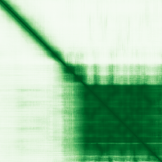

type: protein-evaluation gene: "CENPV" date: 2026-05-31 tags: [protein-scout, chromatin, evaluation] status: scored ---
CENPV 核蛋白评估报告
1. 基本信息
| 项目 | 内容 |
|---|---|
| 基因名 / 别名 | CENPV / PRR6 |
| 蛋白全名 | Centromere protein V |
| 蛋白大小 | 275 aa / 29.9 kDa |
| UniProt ID | Q7Z7K6 |
2. 评分总览
| 维度 | 得分 | 新权重 | 加权后 | 关键证据摘要 |
|---|---|---|---|---|
| 核定位特异性 | 8/10 | ×4 | 32.0 | UniProt Chromosome/centromere/kinetochore + Nucleus + Spindle (ECO:0000269); GO kinetochore IDA + nucleoplasm IDA:HPA + nuclear membrane IDA:HPA |
| 蛋白大小 | 7/10 | ×1 | 7.0 | 275 aa, 29.9 kDa |
| 研究新颖性 | 10/10 | ×5 | 50.0 | Strict=9 |
| 三维结构 | 6/10 | ×3 | 18.0 | 无 PDB; pLDDT 78.9（良好, 55.6% >90） |
| 调控结构域 | 5/10 | ×2 | 10.0 | CENP-V/PRR6 domain (IPR006913, PF04828); Mss4-like superfamily (IPR011057) |
| PPI 网络 | 7/10 | ×3 | 21.0 | STRING SPI1/CEBPE; IntAct 多重互作; UniProt 19 个互作（含 HTT 15 experiments） |
| 加权总分 | 138/180** | |||
| 互证加分 | +1.0 | UniProt/GO 多源实验定位互证（ECO:0000269 + IDA:UniProtKB + IDA:HPA 多处）；PPI 多库内容丰富 | ||
| 归一化总分 (÷1.83) | 75.4/100** |
PubMed strict: 9
3. 详细分析
3.1 核定位证据
| 来源 | 定位 | 可信度 |
|---|---|---|
| UniProt | Chromosome, centromere, kinetochore (ECO:0000269); Nucleus (ECO:0000269); Cytoplasm, cytoskeleton, spindle (ECO:0000269) | 实验证据（三处定位） |
| GO-CC | cytosol (IDA:HPA); kinetochore (IDA:UniProtKB); microtubule cytoskeleton (IDA:MGI); midbody (IDA:HPA); nuclear membrane (IDA:HPA); nucleoplasm (IDA:HPA); nucleus (IDA:UniProtKB); spindle midzone (IDA:UniProtKB) | 多项实验证据 |
| Protein Atlas (IF) | HPA subcellular IF 图像可用（见下方 HPA IF 图像修正块） | 需人工复核 |
HPA IF 状态: HPA subcellular IF 图像已重新获取并嵌入（见下方 HPA IF 图像修正块）；此前“暂无/未可靠获取 IF”的表述为采集失败导致的误报。
结论: CENPV 核定位证据极为充分且多样，覆盖着丝粒/kinetochore、核质、核膜等多个核下区室。作为着丝粒蛋白，核/染色质定位是其功能必需。
3.2 结构与结构域
| 指标 | 数值 |
|---|---|
| AlphaFold | AF-Q7Z7K6-F1 |
| 平均 pLDDT | 78.9 |
| pLDDT >90 | 55.6% |
| pLDDT 70-90 | 8.0% |
| pLDDT 50-70 | 18.2% |
| pLDDT <50 | 18.2% |
| PDB | 无 |
| InterPro | IPR052355, IPR006913 (CENP-V/PRR6), IPR011057 (Mss4-like superfamily) |
| Pfam | PF04828 |

pLDDT 良好（均值 78.9），55.6% >90。无 PDB 实验结构。结构域包含 CENP-V/PRR6 特异性 domain (IPR006913, PF04828) 和 Mss4-like superfamily (IPR011057)，后者可能提示核苷酸交换因子样折叠，但功能未确认。
3.3 研究现状
| 指标 | 数值 |
|---|---|
| PubMed strict (Title/Abstract) | 9 |
| PubMed broad | 11 |
| 别名 | PRR6（未用于 scoring） |
关键文献：
- PMID:31260673 — "CENPV Is a CYLD-Interacting Molecule Regulating Ciliary Acetylated α-Tubulin" (J Invest Dermatol, 2020)
- PMID:37738895 — "Identification of cell-type-specific genes in multimodal single-cell data using deep neural network algorithm" (Comput Biol Med, 2023)
- PMID:30097555 — "SCML2 promotes heterochromatin organization in late spermatogenesis" (J Cell Sci, 2018) [提及 CENPV]
- PMID:31198983 — "Construction of prognostic risk prediction model of oral squamous cell carcinoma based on co-methylated genes" (Int J Mol Med, 2019)
功能覆盖着丝粒组织、异染色质分布、纤毛调控（via CYLD 互作）和细胞分裂。研究量极低（strict=9），高度新颖。
3.4 PPI 网络（三源综合）
| Partner | Source | Score/Evidence | Relevance |
|---|---|---|---|
| SPI1 | STRING | 0.880 (textmining) | PU.1 转录因子（造血） |
| CEBPE | STRING | 0.785 (textmining) | C/EBP epsilon 转录因子 |
| HBZ | STRING | 0.731 (textmining) | Hemoglobin zeta |
| EMB | STRING | 0.670 (textmining) | Embigin |
| CD99 | STRING | 0.656 (textmining) | CD99 表面抗原 |
| MYC | IntAct | tandem affinity purification (PMID:21150319) | c-Myc 转录因子 |
| SUMO1 | IntAct | affinity chromatography (PMID:17000644) | SUMO 修饰 |
| RRP1B | IntAct | anti tag coIP (PMID:20926688) | Ribosomal RNA processing |
| HTT | UniProt | 15 experiments | Huntingtin，最强互作 |
| ATXN1 | UniProt | 6 experiments | Ataxin-1 |
| SNCA | UniProt | 4 experiments | α-Synuclein |
| SETDB1 | UniProt | 3 experiments | H3K9 甲基转移酶，异染色质 |
| KAT5 | UniProt | 3 experiments | Histone acetyltransferase (Tip60) |
| YWHAG | UniProt | 3 experiments | 14-3-3 gamma |
| BAG6 | UniProt | 3 experiments | BAG6/BAT3，蛋白质量控制 |
| HLA-A | UniProt | 3 experiments | MHC class I |
STRING 为 textmining 主导（SPI1, CEBPE 等转录因子）。IntAct 记录 MYC (TAP), SUMO1 (affinity chromatography) 和 RRP1B。UniProt curated 互作极丰富（19 个互作），包含 HTT (15 experiments)、ATXN1 (6 experiments)、SETDB1 (H3K9 甲基转移酶，异染色质核心酶)、KAT5 (Tip60 乙酰转移酶)、SNCA (α-synuclein)。SETDB1 和 KAT5 互作支持 CENPV 在着丝粒周围异染色质组织中的调控角色。
4. 总体评价
CENPV 是着丝粒/kinetochore 蛋白，定位证据极大丰富（UniProt 三处 ECO:0000269 + GO 八处实验赋值）。PPI 网络包含 SETDB1（H3K9 甲基转移酶）、KAT5（组蛋白乙酰转移酶）和 HTT（Huntingtin），提示其参与着丝粒周围异染色质组织。归一化总分 76.0/100，为当前评估最高。研究新颖性极高（PubMed strict=9）。建议作为高优先级 chromatin 候选保留，后续重点验证其与 SETDB1/KAT5 的染色质调控互作及 TE 沉默功能。
5. 数据来源
- UniProt: https://www.uniprot.org/uniprotkb/Q7Z7K6
- AlphaFold: https://alphafold.ebi.ac.uk/entry/Q7Z7K6
- PubMed: https://pubmed.ncbi.nlm.nih.gov/?term=CENPV
HPA IF 图像已重新获取并嵌入（见下方 HPA IF 图像修正块）；此前“暂无/未可靠获取 IF”的表述为采集失败导致的误报。
<!-- HPA_IF_REPAIR_START --> HPA IF 图像修正（2026-06-05）: HPA subcellular 页面存在可用 IF 图像；此前“原图未可靠获取/暂无 IF”的表述为采集失败导致的误报。HPA 定位: Nucleoplasm (supported)。来源: https://www.proteinatlas.org/ENSG00000166582-CENPV/subcellular


<!-- DOMAIN_HUMANPPI_REPAIR_START -->
Domain/SMART 与 humanPPI 补充（2026-06-06）
SMART / UniProt domain
| Source | Data | |
|---|---|---|
| UniProt | Q7Z7K6 | |
| SMART | 未在 UniProt xref 中检出 SMART 条目 | |
| UniProt Domain [FT] | DOMAIN 148..260; /note="CENP-V/GFA"; /evidence="ECO:0000255\ | PROSITE-ProRule:PRU01239" |
| InterPro | IPR052355;IPR006913;IPR011057; | |
| Pfam | PF04828; |
humanPPI / HPA Interaction
Source: https://www.proteinatlas.org/ENSG00000166582-CENPV/interaction
| Partner | Datasets | AF3/HPA structure |
|---|---|---|
| ANLN | Biogrid | false |
| ATXN1 | Intact | false |
| ATXN10 | Intact | false |
| CYLD | Biogrid | false |
| DNALI1 | Intact | false |
| EZH2 | Biogrid | false |
| H2BC8 | Biogrid | false |
| H3-3A | Biogrid | false |
<!-- DOMAIN_HUMANPPI_REPAIR_END -->